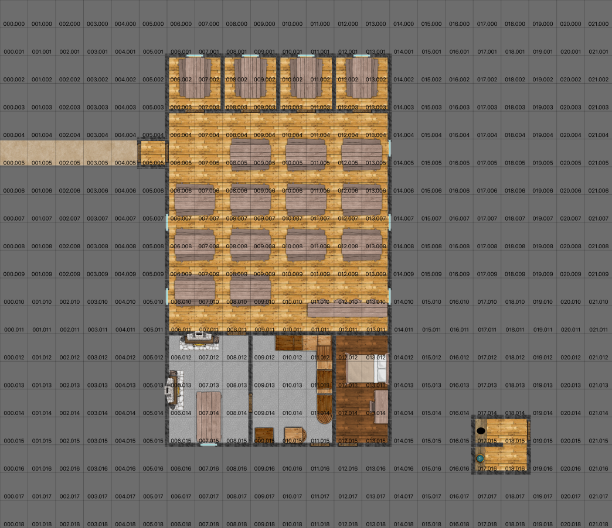

Fox’s Tail Tavern¶
The tavern is crowded with over a dozen tables and benches, and it could easily hold over 70 people. There are four private side rooms that each hold 6-8 people.
Most taverns and inns are run by followers of Folme. They often display old, well-used symbols of their trade in shelves on the walls. It’s not uncommon to see extensive collections of unique ceramic mugs, or baking pans that have finally worn out.
(Difficulty of Moderate, 12, to see that it doesn’t really meet the usual standards of Folme displays of trade tools and work products.) This might be someone posing as a follower of Folme.
The kitchen could easily support several cooks, but most nights has only one cook. The pantry is voluminous, but many of the cases and boxes are homes to mice.
There’s a two-seater privy around the back. There’s no actual back door, however, the only useful entrance is through the main door in the front.
The pantry has an outside door, as down the innkeeper’s apartment in the back.
Most nights, it barely has a few dozen in attendance.
See Act of Desperation and The Dinner Rush, and The Rod is Lost.

The Fox’s Tail, in City of Eagles¶
Scale: Square = 2m (6’).
The bartender has a vague association with the Cult of the Jackal.
(Difficulty Easy.) He’ll readily admit he’s here to recruit “stout lads who aren’t afraid to throw some weight around” – something that clearly describes highwaymen and thugs.
He knows some of thugs he’s recruited. He knows he’s watched, by someone, but he doesn’t know who. He’s not really bright, but reasonably paranoid. He’s not a good fighter, but his ruffians will protect him.
(Difficulty Moderate.) He handles the payroll, and makes limited dips into the pot of money that he controls. He would turn his back on the Cult of the Jackal, but only for vast amounts of money. He’s not motivated by anything other than money. He’s not easily intimidated, since he thinks he’s well protected.
(Difficulty Moderate.) He will name two prominent Jackal collaborators in town:
The boss at The Oaks riding stable is in the cult.
The city librarian passes letters through him to the riding stable. He doesn’t know why.
He won’t actually name Steward, however: he fears the spy-master, and won’t expose him at all.
(Difficulty Difficult. Bribery may be needed.) He may – eventually – explain that the highwaymen that so plague travelers are paid ruffians likely the stout lads he recruited. He’s heard there are others, but he has no clue who else might be recruiting.
Fox’s tail Bartender: Agility 2D, fighting +1, Coordination 3D+2, sleight of hand +1, throwing +2, Physique 3D+2, Intellect 3D, Acumen 3D+2, investigation +1, streetwise +2, Charisma 3D+2, intimidation 3D+1. Disadvantages: Quirk (R2), Greedy; Quirk (R2), Terrified of Steward; Hindrance (R2), Only one leg, Special Abilities: Combat Sense (R1), very aware of surroundings, Move: 10, Strength Damage: 2D, Fate Points: 1, Character Points: 5, Body Points: 20, Equipment: Throwing daggers 1D; Kitchen knife 1D; Club 1D+1.
Hired Thug Leader: Agility 3D, fighting 1D, melee combat +2, Coordination 3D, Physique 3D, stamina 1D, Intellect 3D, healing +2, Acumen 3D, hide 1D, streetwise +2, tracking 1D, Charisma 3D, intimidation 2D+2. Disadvantages: Devotion (R2), Cult of the Jackal; Employed (R2), Cult of the Jackal; Quirk (R2), Exercise Nut, Move: 10, Strength Damage: 2D, Fate Points: 0, Character Points: 5, Body Points: 20, Equipment: Padded leather armor 1D; Dagger 1D; Spiked Club 1D+1.
Bandit Army – Guard, Thug, etc.: Agility 3D, fighting 1D, melee combat +2, Coordination 3D, Physique 3D, Intellect 3D, Acumen 3D, Charisma 2D. Disadvantages: Devotion (R3), Cult of Jackal; Employed (R3), Jackal Temple; Quirk (R2), Hopes to becomes an agent, Special Abilities: Natural Hand-to-Hand Weapon (R3), Brutal punch, Move: 10, Strength Damage: 2D, Fate Points: 0, Character Points: 5, Body Points: 24, Equipment: Spiked Club 1D+1.